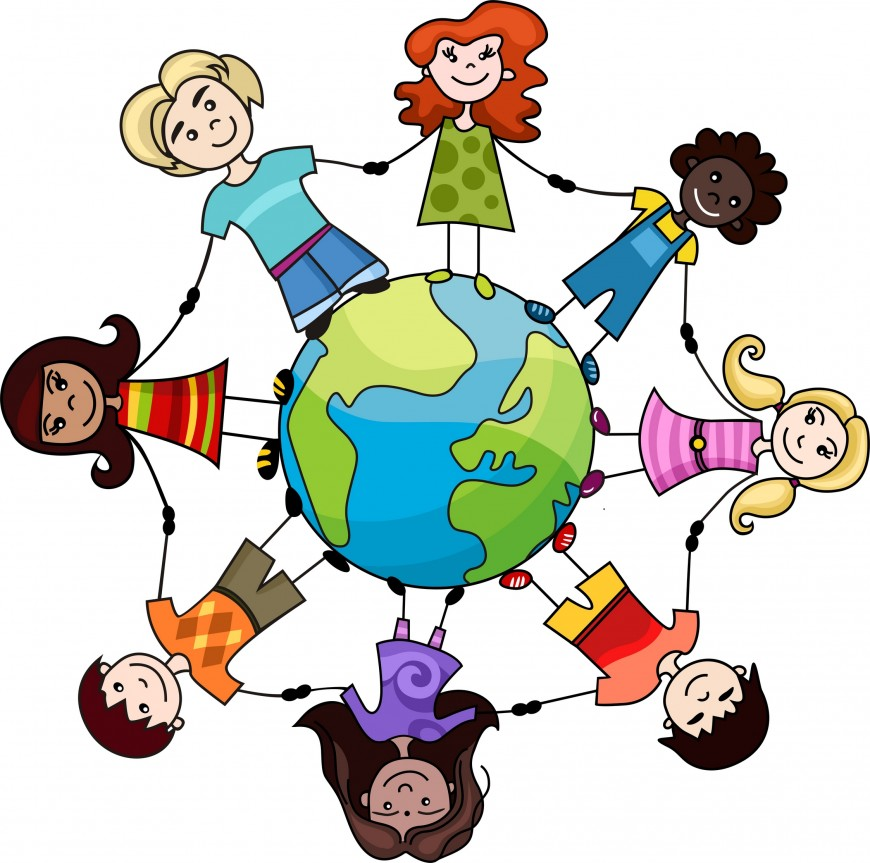

|
|
|
Solidaridad

|
La solidaridad es uno de los valores humanos por excelencia, que se define como la colaboración mutua en las personas, como aquel sentimiento que mantiene a las personas unidas en todo momento, sobre todo cuando se viven situaciones difíciles. Este valor esta ligado a muchos más como la amistad, amor, etc. Dependiendo de los tipos de solidaridad existentes no hay nada mejor que poner en´práctica este gran valor, lo podemos práctica ayudando a un familiar, amigo o cualquier persoa y sobretodo ofrece tu ayuda totalmente desinteresada. |
Tipos de Solidaridad |
Según el sociólogo Émile Durkheim los tipos de solidaridad son:
Solidaridad mecánicaTambién denominada solidaridad por similitud, se da con mucha más frecuencia y presencia en los países poco desarrollados o en las sociedades primitivas, ya que ésta se caracteriza por una total competencia de cada individuo en la mayoría de los trabajos, dándose tan sólo una mínima diferenciación a razón de edad, género y especie. En esta existe un castigñ2o penal y público, como puede ser un ejemplo la crucifixión, o la guillotina, si es que nos referimos a las sociedades primitivas. |
 |
Solidaridad orgánicaTambién denominada solidaridad por consenso. Durkheim afirma que la fuerte especialización, capacidad o habilidad de cada individuo origina una gran interdependencia, base de la cohesión y solidaridad grupal, de las personas con su sociedad. A esta clase la llama solidaridad orgánica. Así, cada miembro posee una parte de los conocimientos generales y sus recursos, por lo que todos dependen de todos. Este tipo de solidaridad se suele presentar en las sociedades desarrolladas. Encontramos en esta concepción la parte negativa en la que una excesiva especialización podría desembocar en la anomia. Durkheim establece que estas sociedades funcionan como un organismo vivo, donde cada cual tiene una función, y si uno falla se enferma el organismo. Para lo cual, en esta se da el derecho restitutivo, el cual se caracteriza por tener la función de re-educar al individuo, para que se mantenga en su eje, sin formar conflictos en la sociedad. |
|